Đồ Thị Euler
1. Bài toán 7 cây cầu ở Konigsberg
Ở Konigsberg nước Đức, có một con sông chảy qua thành phố làm cho trung tâm của thành phố thành một hòn đảo. Sau khi vượt qua hòn đảo con sông bị chia làm hai nhánh. Bảy cây cầu được xây dựng để mọi người có thể đi từ phần đất này sang phần đất khác. Bản thô sơ của trung tâm thành phố có dạng:

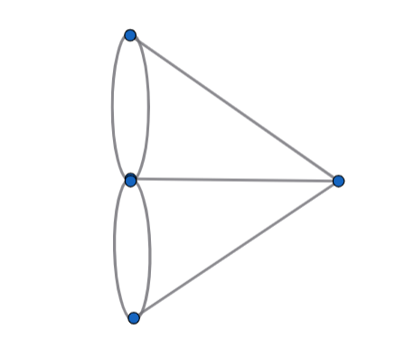
Bài toán đặt ra là: Có thể nào, xuất phát từ một phần đất nào đó, đi qua tất cả các cây cầu, mỗi cây cầu đúng một lần và quay về nơi xuất phát hay không?
Nhà toán học Euler đã trả lời trọn vẹn bài toán này. Việc này đã đóng góp rất lớn cho sự phát triển của lý thuyết đồ thị.
2. Đồ thị Euler và đồ thị nửa Euler
G=(X,U) là đồ thị hữu hạn liên thông
Đồ thị Euler
Một chu trình trên G đi qua tất cả các cạnh/cung của G và mỗi cạnh cung đúng một lần được gọi là chu trình Euler.
Đồ thị G có chứa chu trình Euler được gọi là đồ thị Euler.
Các hình vẽ sau đây là đồ thị Euler:
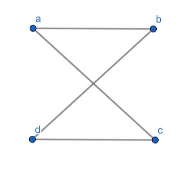
Đồ thị Euler abcde
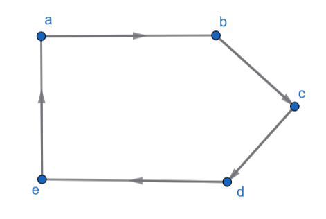
Đồ thị Euler abcdea
Đồ thị nửa Euler
Một đường đi trên G đi qua tất cả các cạnh/cung của G và mỗi cạnh/cung đúng một lần được gọi là đường đi Euler.
Đồ thị G chứa đường đi Euler được gọi là đồ thị nửa Euler
Các hình vẽ sau đây là đồ thị nửa Euler
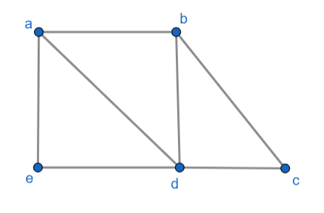
Đồ thị nửa Euler abdaedcb
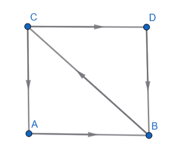
Đồ thị nửa Euler cdbcab
Từ các định nghĩa, nhận xét rằng: mọi đồ thị Euler đều là đồ thị nửa Euler
Vấn đề đặt ra là khi nào thì một đồ thị hữu hạn liên thông là một đồ thị Euler, nửa Euler?
3. Định lý Euler
Bổ đề
G = (X,U) là đồ thị vô hướng hữu hạn.
Nếu bậc của mỗi đỉnh G không nhỏ hơn 2 thì G có chứa chu trình.
Định lý Euler
G = (X,U) là đồ thị vô hướng hữu hạn liên thông
G là đồ thị Euler khi và chỉ khi mọi đỉnh của G đều có bậc chẵn
Hệ quả
G = (X,U) là đồ thị vô hướng hữu hạn liên thông.
G là đồ thị nửa Euler khi và chỉ khi G có không quá 2 đỉnh có bậc lẻ.
Định lý
G = (X,U) là đồ thị có hướng hữu hạn liên thông mạnh
G là đồ thị Euler khi và chỉ khi bậc trong và bậc ngoài của một đỉnh x bất kỳ là bằng nhau, tức là:
d-(x) = d+(x), ∀x ∈ X
4. Xác định chu trình Euler
G=(U,X) là đồ thị vô hướng hữu hạn.
Hãy tìm chu trình Euler của G nếu có.
Bước 1:
Kiểm tra xem G có phải là đồ thị liên thông hay không.
- Nếu không thì giải thuật dừng và kết luận rằng đồ thị không có chu trình Euler.
Nếu phải thì sang bước 2
Bước 2:
Kiểm tra xem có phải tất cả các đỉnh của G đều có bậc chẵn hay không.
- Nếu không thì giải thuật dừng và kết luận rằng đồ thị không có chu trình Euler
- Nếu phải thì sang bước 3.
Bước 3:
- Xây dựng các chu trình trong G sao cho mỗi cạnh của đồ thị đều có một chu trình đi qua và chỉ được đi qua một lần.
- Ghép các chu trình đơn như trên lại tại các đỉnh chung thì thu được chu trình Euler.
Ví dụ:
Đồ thị vô hướng sau đây có chứa chu trình Euler
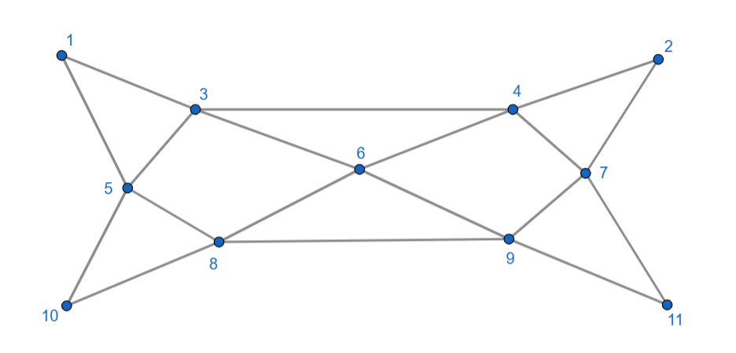
Có nhiều cách thực hiện bước 3, có thể lần lượt xây dựng 3 chu trình:
μ1 : 1 - 3 - 5 - 8 - 10 - 5 - 1
μ2 : 3 - 4 - 6 - 9 - 8 - 6 - 3
μ3 : 4 - 2 - 7 - 11 - 9 - 7 - 4
Ghép 3 chu trình trên điểm chung ta có chu trình Euler.
Đồ Thị Hamilton
1. Trò chơi Hamilton
Lịch sử phát sinh đồ thị Hamilton xuất phát từ trò chơi của nhà toán học William Hamilton, đưa ra năm 1859 như sau: xác định đường đi theo các cạnh của một thập nhị diện đều như hình vẽ sao cho phải đi qua tất cả các đỉnh, mỗi đỉnh đúng một lần rồi trở về đỉnh xuất phát.
Có thể hình dung bài toán như việc tìm đường đi du lịch vòng quanh thế giới sao cho mỗi thành phố đều được viếng và chỉ viếng một lần duy nhất
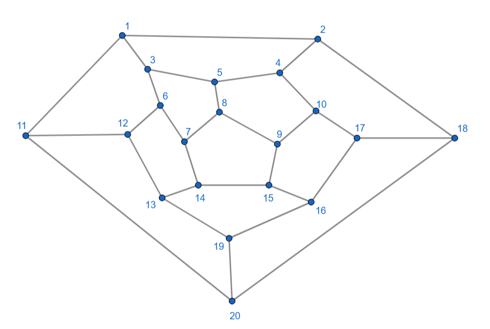
2. Đồ thị Hamilton và đồ thị nửa Hamilton
G=(X,U) là đồ thị.
Đồ thị Hamilton
Một chu trình trên G bắt đầu từ một đỉnh nào đó, đi qua tất cả các đỉnh của G và đi qua mỗi đỉnh đúng một lần, và quay về đỉnh xuất phát được gọi là chu trình Hamilton. Một đồ thị được gọi là đồ thị Hamilton nếu nó có chứa chu trình Hamilton.
Ví dụ
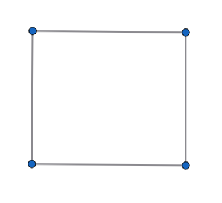
Đồ thị Hamilton
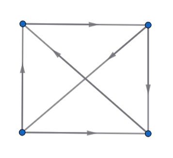
Đồ thị Hamilton
Đồ thị nửa Hamilton
Một đường đi / đường đi có hướng trên G đi qua tất cả các đỉnh của G và đi qua mỗi đỉnh đúng một lần được gọi là đường đi Hamilton. Một đồ thị được gọi là đồ thị nửa Hamilton nếu nó có chứa đường đi Hamilton.
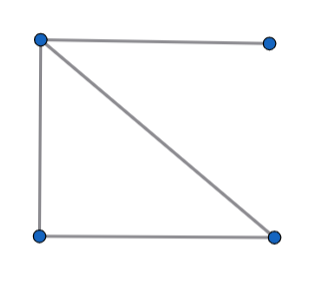
Đồ thị nửa Hamilton
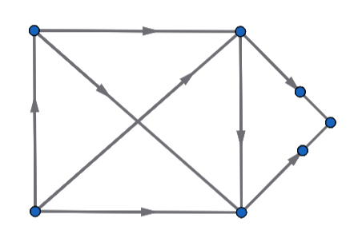
Đồ thị nửa Hamilton
Việc tìm tiêu chuẩn để nhờ đó nhận biết một đồ thị là đồ thị Hamilton là một vấn đề khó. Một số kết quả thu được được trình bày trong các định lý sau đây:
3. Các định lý
Định lý Dirak
G=(X,U) là đồ thị đơn vô hướng với |X|>2.
Nếu mỗi đỉnh đều có bậc >= |X|/2 thì G là đồ thị Hamilton.
Định lý Dirak tổng quát
G=(X,U) là đồ thị liên thông có hướng.
Nếu bậc trong, bậc ngoài của mỗi đỉnh đều >= |X|/2 thì G là đồ thị Hamilton.
Định lý
Nếu G=(X,U) là đồ thị có hướng đầy đủ thì G là đồ thị nửa Hamilton.
Hệ quả
Nếu G=(X,U) là đồ thị vô hướng đầy đủ với |X|>=3 thì G là đồ thị Hamilton.
Định nghĩa
Người ta gọi một đồ thị có hướng là một đồ thị đấu loại khi 2 đỉnh bất kỳ không tính đến thứ tự của nó được nối với nhau bằng đúng một cung.
Ví dụ
Đồ thị sau đây là đồ thị đấu loại
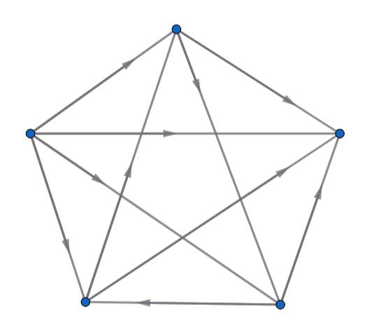
Định lý
1-Mọi đồ thị đấu loại là đồ thị nửa Hamilton.
2-Mọi đồ thị đấu loại liên thông có hướng là đồ thị Hamilton.
4. Xác định chu trình Hamilton
Để tìm chu trình Hamilton trên đồ thị G người ta dựa vào nhận xét sau: Mỗi đỉnh trên chu trình Hamilton là đầu mút của đúng hai cạnh trên chu trình đó. Từ đó người ta có quy tắc:
1-Nếu tồn tại đỉnh có bậc <=1 thì đồ thị G không có chu trình Hamilton.
2-Nếu đỉnh x có bậc bằng đúng 2 thì cả hai cạnh chứa x đều phải thuộc chu trình Hamilton.
3-Chu trình Hamilton không chứa chu trình con thực sự nào.
4-Trong quá trình xây dựng chu trình Hamilton, sau khi lấy hai cạnh trong số các cạnh của một đỉnh x nào đó đặt vào chu trình thì không thể lấy thêm cạnh nào nữa đưa vào chu trình, do đó có thể xóa tất cả các cạnh còn lại chứa x.